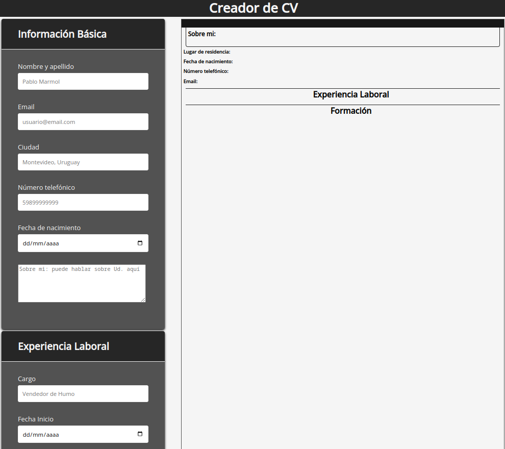

Mi nombre es Santiago Iparraguirre y soy de Montevideo, Uruguay. Tengo 32años. Soy un desarrollador autoformado apasionado con diferentes tecnologías y en constante aprendizaje. A nivel personal disfruto leyendo y aprendiendo, especialmente con lo relacionado al mundo GNU/Linux y software libre en general.
Las tecnologías que utilizo a nivel cotidiano son JavaScript con el Framework React, HTML y CSS con Bootstrap, para testing domino Jest y también utilizo GIT y Webpack par gestionar mis proyectos y librerias
Generador de Curriculums
Aplicación de React: es un generador de Curriculums donde mediante formularios renderizamos en el dom el contenido de los distintos inputs a traves de arrays, objetos y strings.
Batalla Naval
Recreación del clásico juego de mesa Batalla Naval, es humano vs cpu (la cpu hace jugadas aleatorias) con 5 barcos en cada tableros. Desarrollado completamente con JS vanilla, jest y webpack con babel para soporte de ES6.
Calculadora
Una simple calculadora para hacer cálculos matemáticos simples, cuenta con funciones como: integración de teclado, operaciones matemáticos simples, sistema decimal de hasta 2 valores y todas las funciones que tendría una calculadora normal.
Aplicación del clima
Aplicación con estilo widget realizada con el API de openWeather
Etch a Sketch
Es una simple cuadrícula con tamaño ajustable en el que podemos dibujar con 2 distintas paletas de colores: común y un color aleatorio. También cuenta con goma de borrar y un botón para reiniciar la cuadrícula entera.
Catalogador de bibliotecas
Es un simple catalogador de libros al que se le puede declarar titulo, autor, estado y agregar notas.